/// ACT19_LIVE_RESPONSE
> INF_CRIM // ACTIVIDAD_19 // FIRST_RESPONDER...
Profesor: Servando Lopez Contreras
Jesús Israel Martínez Escobedo - 175325
Los primeros minutos cuentan: adquisición forense en escenas del crimen digital
Informática Criminológica
Ingeniería en Tecnologías de la Información
Universidad Politécnica de San Luis Potosí
15 de noviembre de 2026
Objetivo
Hacer como primer respondiente: sacar la evidencia de un equipo Windows que sigue encendido ("en caliente") antes de que se pierda. Para esto usé comandos de cmd y PowerShell y la herramienta NetUsers.
Hay información que solo existe mientras el equipo está prendido, como los procesos, las conexiones, la caché DNS o el historial de la consola. Si apagas el equipo antes de sacarla, se pierde.
Equipo analizado: laptop propia, usada como equipo comprometido
Sistema: Windows 11 Pro
Herramientas: cmd, PowerShell, NetUsers.exe (OptimumX)
Carpeta de trabajo: C:\Act19
Nota: en las capturas de esta página tapé los datos personales
Metodología
Empecé por lo que más rápido se pierde y terminé con lo que se puede guardar para después:
- Carpeta C:\Act19
- NetUsers.exe
- Consola como admin
- Fecha y hora
- Procesos y servicios
- Usuarios
- ipconfig y NetBIOS
- Conexiones y programas
- DNS, ARP y WiFi
- Historial y compartidos
- systeminfo
- Tareas programadas
- Logs (.evtx)
- Copia del hosts
- Árbol de archivos
Al correr netstat -nb salió "La operación solicitada requiere elevación", porque la consola no estaba como administrador. Tuve que abrir otra como admin, y por eso el historial de comandos solo muestra lo que se hizo desde esa ventana.
Resultados
Parte I // Equipo y usuarios
Equipo
Dell Latitude 3400, 16 GB de RAM, grupo WORKGROUP (no está en un dominio de empresa).
Cuentas
La misma cuenta está conectada y es la única que ha iniciado sesión.
Línea de tiempo
Arranque del equipo, conexión al WiFi y luego inicio de sesión, sacado de tres comandos distintos.
Servicios
cmd solo enseña los que corren; PowerShell enseña todos en una tabla más fácil de revisar.
Parte II // Red y sistema
Conexiones
Todas las conexiones hacia internet son HTTPS de programas conocidos (Microsoft, Edge, OneDrive, Telegram).
Caché DNS e historial
La caché tenía solo 4 dominios y el historial de cmd se borra al cerrar la ventana.
Compartidos y hosts
Solo los compartidos por defecto, sin unidades de red, y el archivo hosts sin redirecciones.
Registros de eventos
Exportados a .evtx; cada uno llega a unos 20 MB y luego Windows borra lo más viejo.
- Sacar una copia de la RAM antes de apagar el equipo y analizarla con Volatility.
- Sacar el hash de todo lo exportado y guardarlo en un medio externo.
- Revisar los logs en el Visor de eventos, sobre todo los inicios de sesión.
- Apagar el equipo, hacer una imagen del disco y analizarla con Autopsy.
- Llenar la cadena de custodia con cada paso y su hora.
Evidencias
Capturas de cada comando, en orden. Los datos personales (MAC, IPv6, redes WiFi y correo) están tapados.
01 // Fecha y hora
Comandos: date /t
time /t
Fecha y hora del sistema al empezar la adquisición.
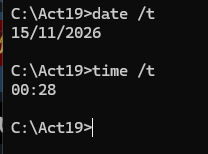
02 // Procesos en ejecución
Comando: tasklist
Lista de programas corriendo con su PID y memoria. Solo procesos de Windows y de programas conocidos.
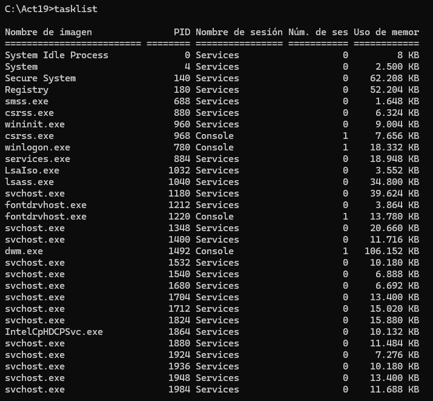
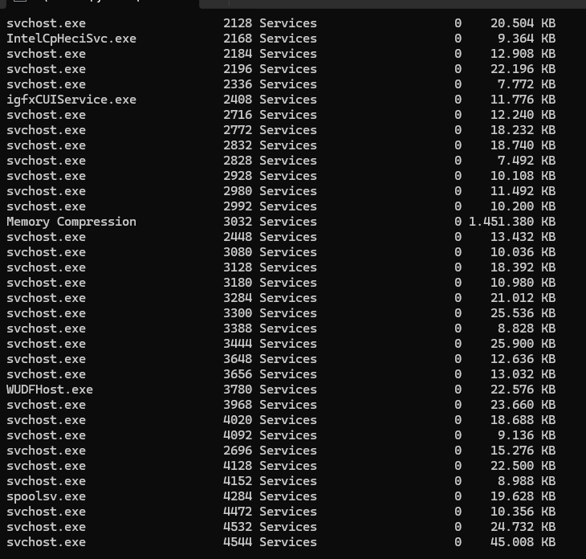
03 // Servicios en cmd
Comando: sc query
Solo enseña los servicios que están corriendo, en bloques largos con datos técnicos.
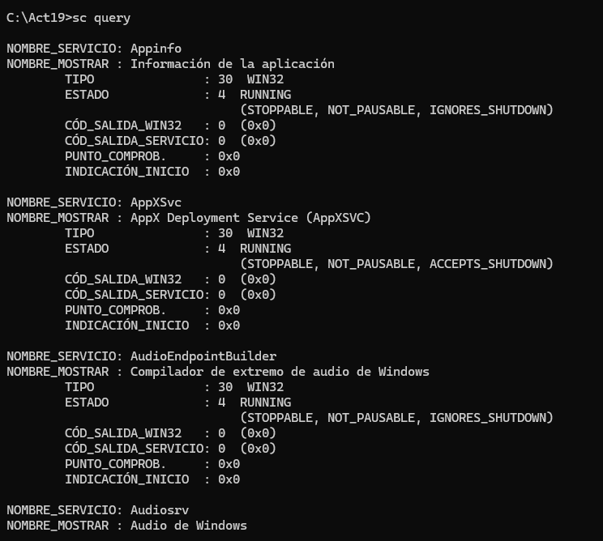
04 // Servicios en PowerShell
Comando: Get-Service
Enseña todos los servicios, corriendo y detenidos, en una tabla fácil de leer.
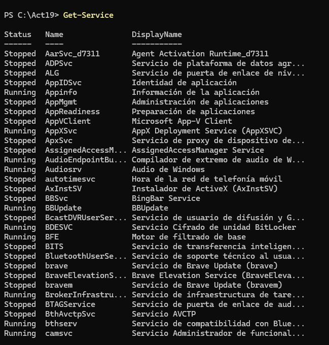
05 // Usuarios conectados
Comando: NetUsers.exe /local
Solo un usuario con sesión abierta.
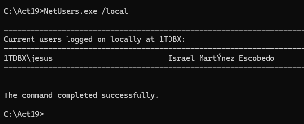
06 // Usuarios que han entrado
Comando: NetUsers.exe /history /local
Solo la misma cuenta ha iniciado sesión en el equipo.
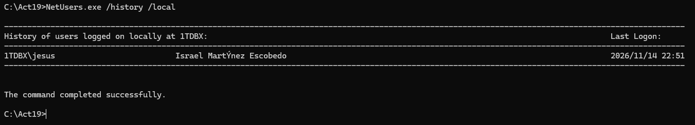
07 // Información de red
Comando: ipconfig /all
Tres adaptadores: Ethernet (desconectado), VirtualBox y WiFi. Los datos personales están tapados.
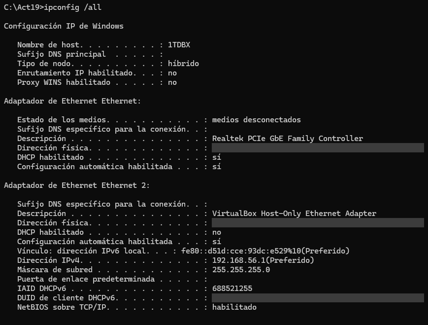
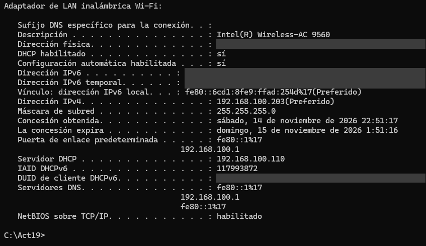
08 // Nombres NetBIOS
Comando: nbtstat -n
Nombre del equipo, servicio para compartir archivos y grupo WORKGROUP.
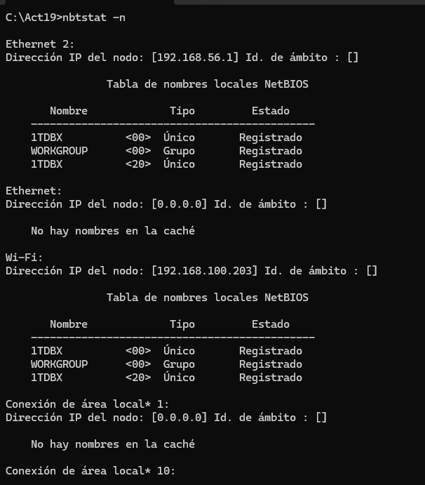
09 // Conexiones establecidas
Comando: netstat -an | findstr /I "ESTAB"
Conexiones locales y hacia internet, todas al puerto 443 (HTTPS).
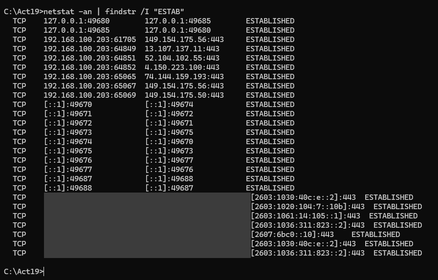
10 // Programas con su conexión
Comando: netstat -nb
Muestra qué programa abrió cada conexión. Necesita permisos de administrador.
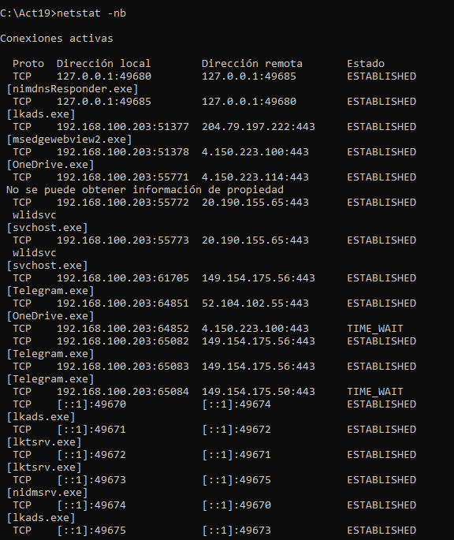
11 // Caché DNS
Comando: ipconfig /displaydns | findstr /C:"Nombre de registro"
Pocos dominios, porque la caché se borra sola cada cierto tiempo.
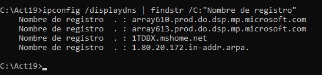
12 // Tabla ARP
Comando: arp -a
Relación entre IP y MAC de los equipos con los que se habló. Las MAC están tapadas.
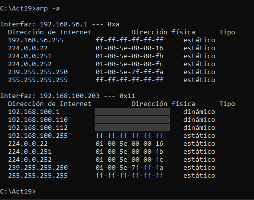
13 // Redes WiFi guardadas
Comando: netsh wlan show profiles
16 redes guardadas. Los nombres están tapados.
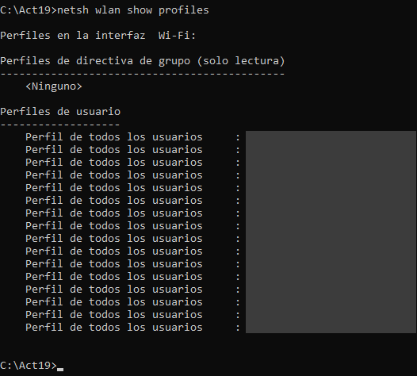
14 // Historial de comandos
Comando: doskey /history
Solo guarda lo de la ventana actual; al cerrarla se pierde.
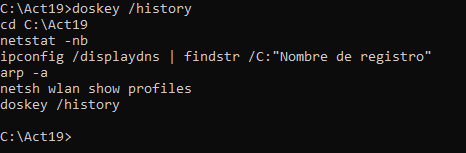
15 // Unidades mapeadas
Comando: net use
No hay unidades de red conectadas.
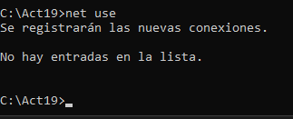
16 // Recursos compartidos
Comando: net share
Solo los que Windows comparte por defecto (C$, ADMIN$, IPC$).
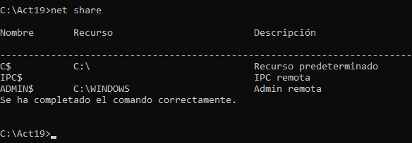
17 // Información del equipo
Comando: systeminfo
Datos del sistema, fechas de instalación y arranque, memoria y red. Los datos personales están tapados.
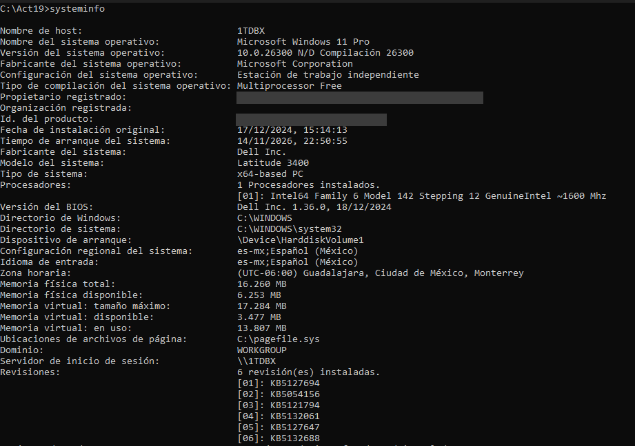
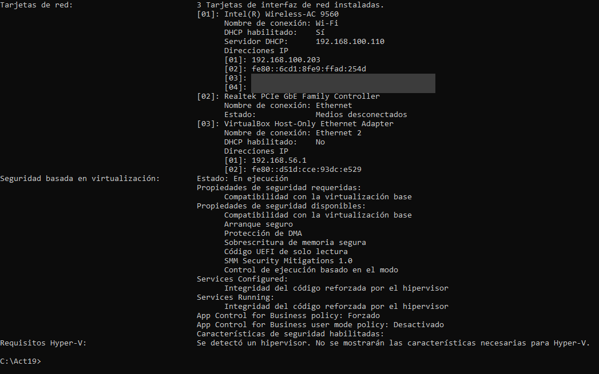
18 // Tareas programadas
Comando: schtasks /query
Solo tareas de actualización de programas instalados.
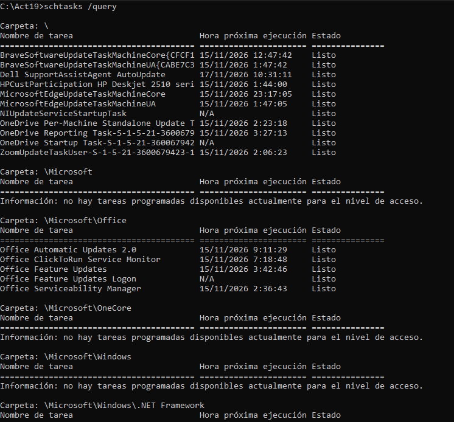
19 // Exportar logs
Comandos: wevtutil epl System "%USERPROFILE%\OneDrive\Escritorio\System.evtx"
wevtutil epl Application "%USERPROFILE%\OneDrive\Escritorio\Application.evtx"
wevtutil epl Security "%USERPROFILE%\OneDrive\Escritorio\Security.evtx"
Los tres logs principales exportados al Escritorio, de unos 20 MB cada uno.
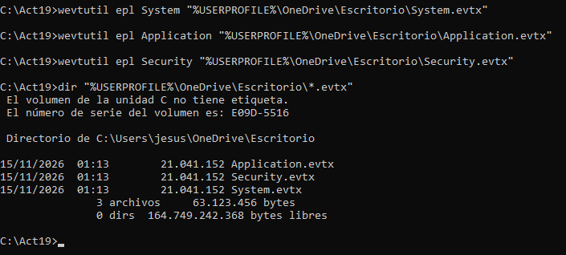
20 // Archivo hosts
Comandos: type C:\Windows\System32\drivers\etc\hosts
copy C:\Windows\System32\drivers\etc\hosts C:\Act19\hosts_copia.txt
Solo trae comentarios; no hay redirecciones. Se guardó una copia.
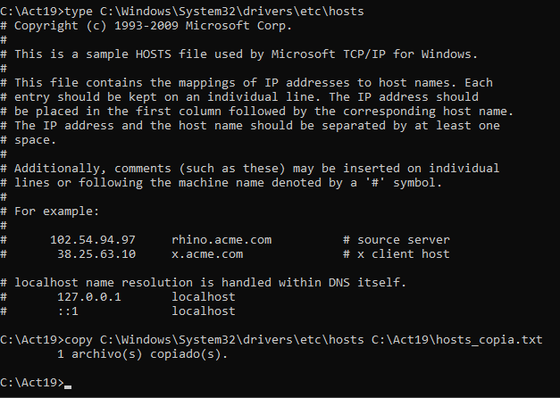
21 // Árbol de archivos por fecha
Comando: dir C:\Windows /s /tc /o:d > C:\Act19\arbol_windows.txt
Listado de Windows ordenado por fecha de creación, guardado en un archivo.
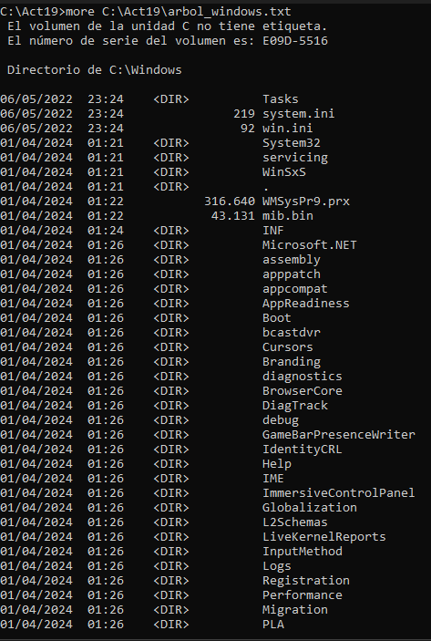
Entregables
Informe de la actividad.
Conclusión
Con comandos que ya trae Windows y una herramienta pequeña como NetUsers se puede sacar mucha información de un equipo prendido en pocos minutos, sin instalar nada.
Me quedó claro por qué se llama "los primeros minutos cuentan": la caché DNS, el historial de cmd y las conexiones activas se pierden muy rápido, y los logs se van borrando solos. Por eso hay que seguir un orden, empezar por lo más volátil y documentar cada paso.